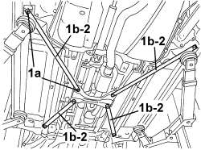
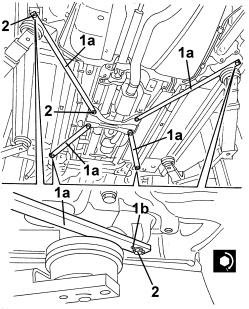

7210B47 STRENGTHENING ROD UNDER BODYSHELL - R.R.
- Path
- Procedures > 72 PANELS AND FRAMES > 7210 REMOVING-REFITTING > 7210B STRUCTURAL ELEMENTS (CENTRE AND REAR SECTION) > 7210B47 STRENGTHENING ROD UNDER BODYSHELL - R.R.
- Kind
- repair procedure (removal / refitting; the operation number is the code)
- Applies to
- engines: 2.2 JTS, 3.2 JTS; all production periods; only with equipment: Spider
- Interactive page
- https://sloeber94.github.io/elrnDB-aBrrSpdr/en/#/946004204
Applies to: engines: 2.2 JTS, 3.2 JTS; all production periods; only with equipment: Spider
 Removing
Removing
 Refitting
Refitting- Position the vehicle on a lift.
- Raise the vehicle.
1. Undo the bolts (1a) for the rod (1b) involved in the removal.
2. Remove the rod.

Applies to: engines: 2.2 JTS, 3.2 JTS; all production periods; only with equipment: Spider
Refitting
Removing- Check that the rod is not damaged.
1 Position the rod (1a) involved in the refitting, positioning the slotted openings (1b) towards the outside.
2. Screw in the bolts and tighten them to the recommended torque.
Component | Fastening | dia | Value (daNm) | Validity |
|---|---|---|---|---|
FLOOR PAN STIFFENING ROD | Bolt | - | 5.0 ÷ 6.0 |

Applies to: engines: 2.2 JTS, 3.2 JTS; all production periods; only with equipment: Spider
- Remove the vehicle from the lift.